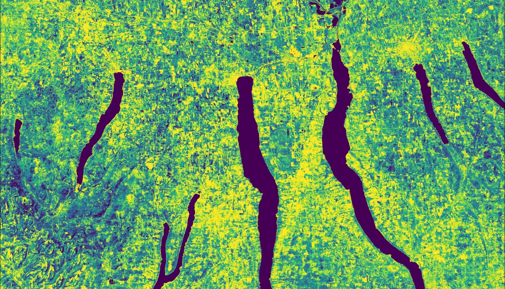
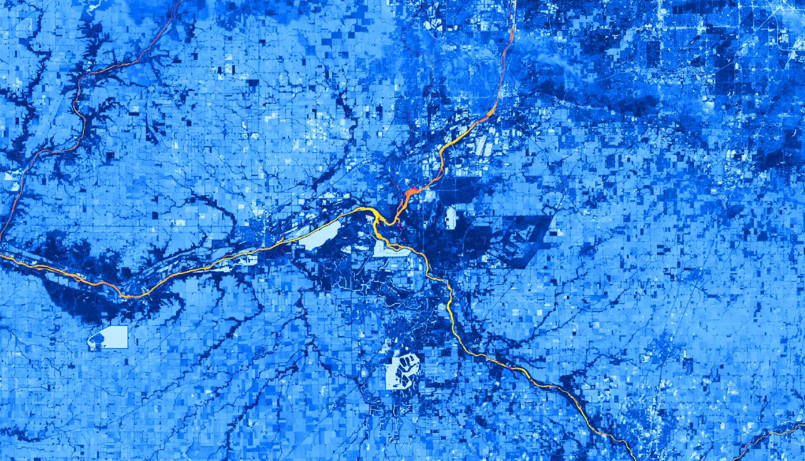
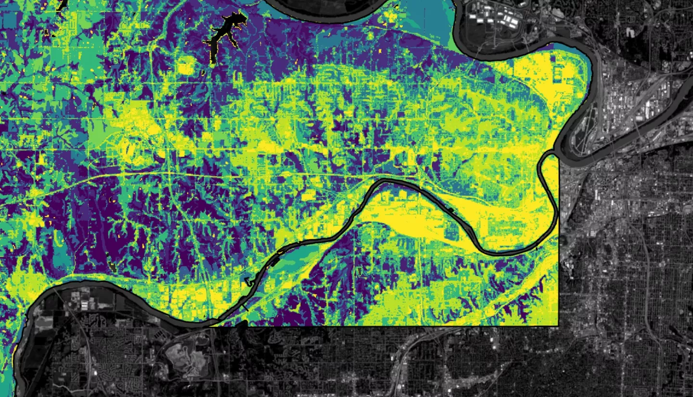
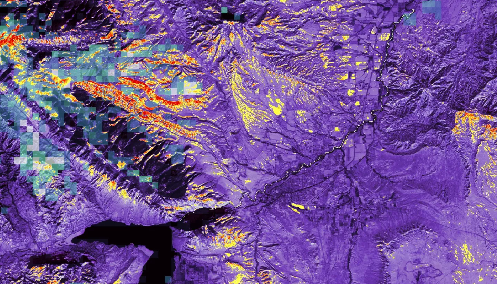
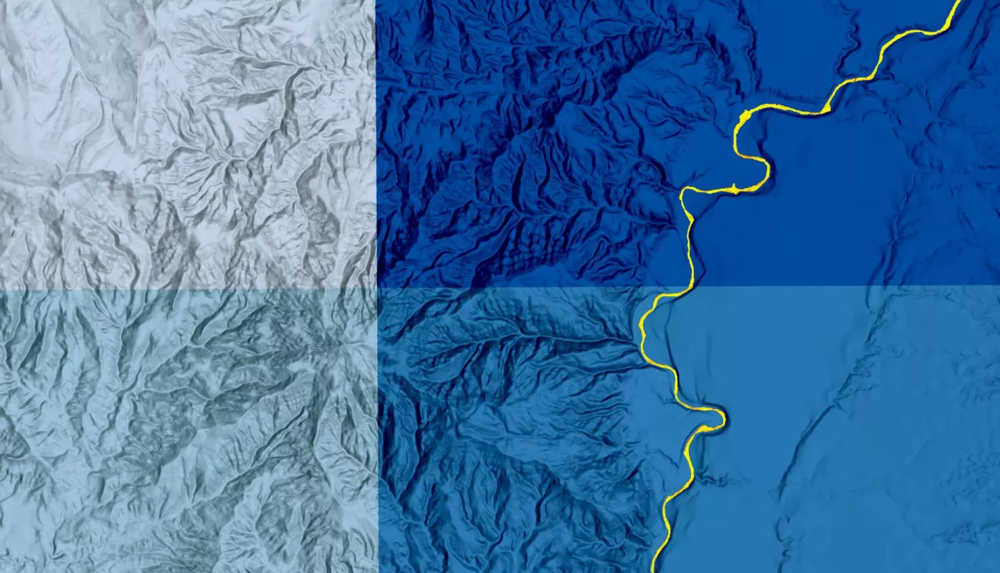
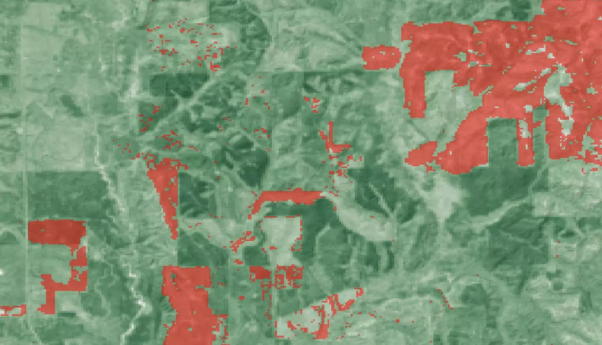
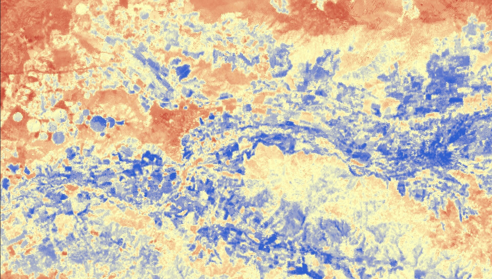
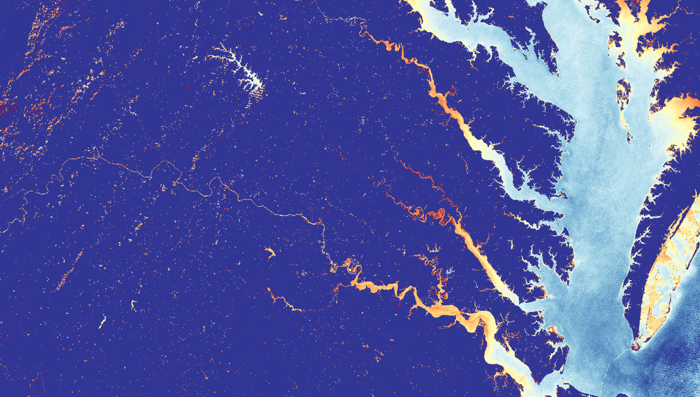
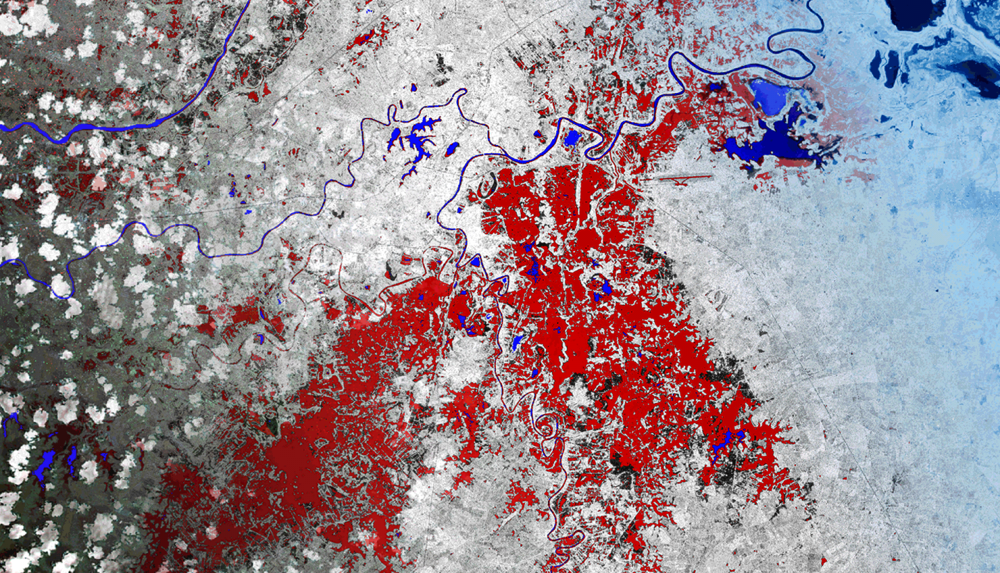

NASA DEVELOP PUP Projects
Projects I managed in the NASA DEVELOP program as the Fellow for the Pop-Up Project (PUP) Office
| Short Title | Long Title | Year | Term | Participants | Advisors | Project Page | |
|---|---|---|---|---|---|---|---|
|  | New York Ecological Conservation | Evaluating Agricultural Conservation Easement Impact Using Earth Observations to Examine Avoided Soil Carbon Loss to Development | 2023 | Summer | Sam Schulteis (Project Lead), Sam Haas, Stephanie Willsey, Oliver Wilson | Charlie Bettigole, Joseph Spruce | More About New York Ecological Conservation |
|  | Kankakee Water Resources | Monitoring Temperature and Vegetation to Detect River Flow Impediments at Energy Intake Structures | 2023 | Summer | Marisa Smedsrud (Project Lead), Hayden Hoffmeister, Oluwatosin Orimolade, Barira Rashid | Dr. Austin Madson | More About Kankakee Water Resources |
|  | InVEST Urban Development | Incorporating Earth Observation Data into the Integrated Valuation of Ecosystem Services and Tradeoffs (InVEST) Urban Flood Risk Mitigation Model Python API | 2023 | Spring | Son Do & Jessica Besnier | Dr. Venkataraman Lakshmi, Dr. Kenton Ross | More About InVEST Urban Development |
|  | Shoshone River Water Resources II | Quantifying Sediment Input in the Shoshone River in Wyoming using the Soil and Water Assessment Tool for Enhanced Water Quality Monitoring | 2023 | Spring | Robyn Holmes (Project Lead), Christian Bitzas, Jillian Greene, Isabella St. John | Dr. Austin Madson | More About Shoshone River Water Resources II |
|  | Shoshone River Water Resources | Assessing Sediment Inputs into the Shoshone River in Wyoming to Determine Areas for Protection and Restoration Practices | 2022 | Fall | Robyn Holmes (Project Lead), Will Campbell, Cassie Ferrante, Nelson Lemnyuy | Dr. Austin Madson | More About Shoshone River Water Resources |
|  | Southeast US Climate | Leveraging Land Cover and Aboveground Biomass Products to Evaluate Carbon Emission Trends in the Talladega National Forest | 2022 | Fall | Heidi Rogers (Project Lead), Mistaya Smith, Maggie Mason, Anish Holla | Christine Evans, Dr. Emil Cherrington, Joseph Spruce | More About Southeast US Climate |
|  | Maipo River Valley Agriculture | Determining Crop Coefficients Using Remote Sensing for the Maipo River Valley Basin in Chile | 2022 | Summer | Benjamin Goffin (Project Lead), Duncan Srsic, Rishudh, Sarah Carlos | Dr. Venkataraman Lakshmi, Dr. Kenton Ross | More About Maipo River Valley Agriculture |
|  | Chesapeake Bay Water Resources | Characterization of Sediment Dynamics for Enhanced Water Quality Monitoring in the Chesapeake Bay | 2022 | Summer | Katherine Hahn (Project Lead), Julia Atayi, Julia Portmann, Abigail Sgan | Dr. Venkataraman Lakshmi, Dr. Kenton Ross | More About Chesapeake Bay Water Resources |
|  | Mexico Disasters | Comparing Feasibility of Flood Detection Methods Using Google Earth Engine and Open Data Cube for Flood Mitigation in Mexico | 2022 | Spring | Philip Casey (Project Lead), Sean Nelsen, Zachary Silberman, John Willis | Dr. Brian Killough, Dr. Kenton Ross | More About Mexico Disasters |
|
UHEAT Urban Development | Increasing Capabilities and Updating the Urban Heat Exposure Assessment for Tempe (UHEAT) Tool | 2022 | Spring | Akshay Agrawal (Project Lead), Myung Sik Cho, Zainab Farid, Vanessa Machuca | Dr. Kenton Ross, Dr. David Hondula, Lauren Childs-Gleason | More About UHEAT Urban Development |
Please feel free to contact me at my email address or through my LinkedIn Account below.
cawilliams719@gmail.com